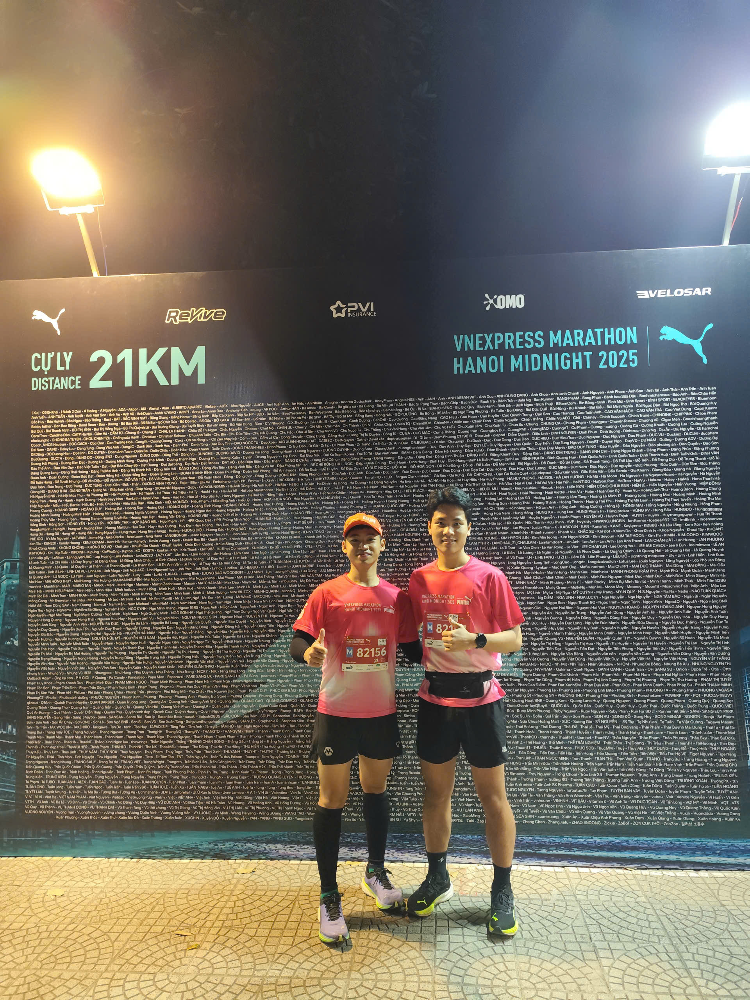
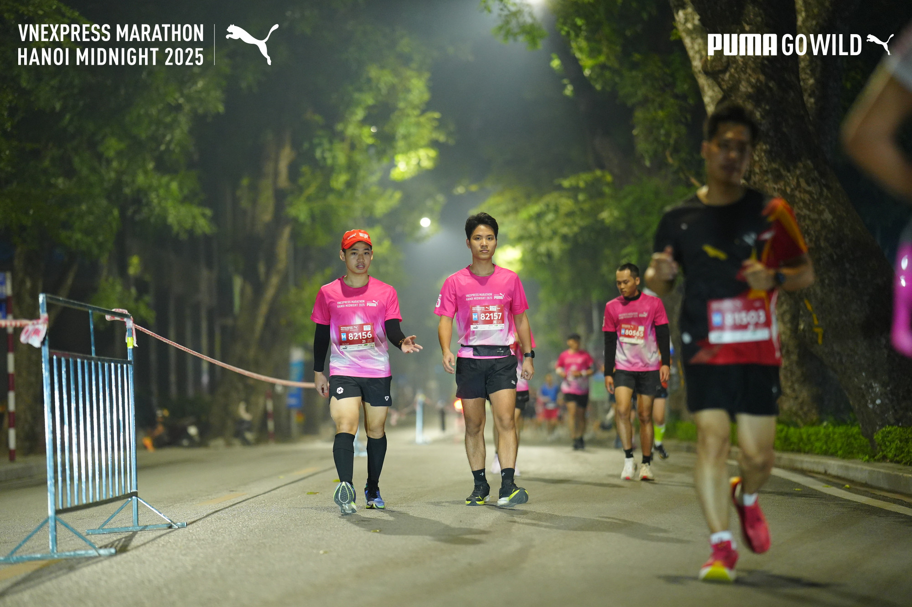
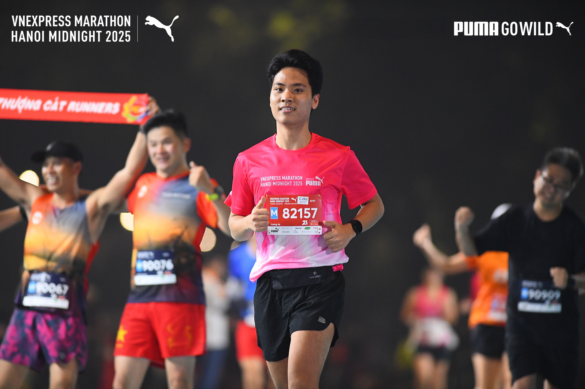
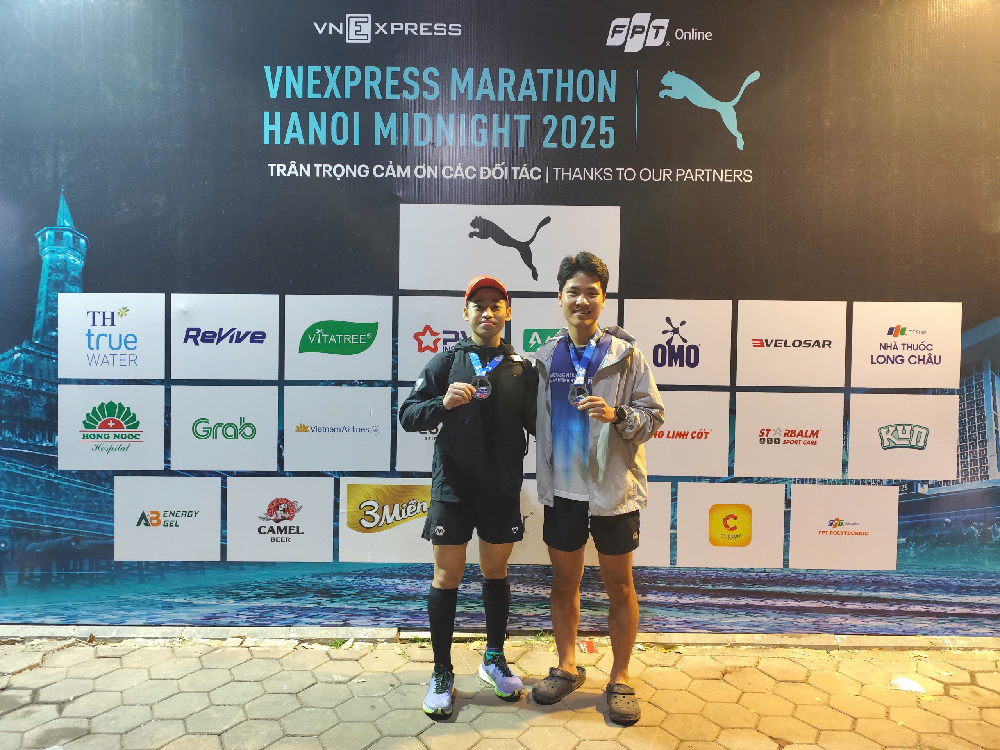

Running a half marathon is as much a mental challenge as it is a physical one. After months of training and anticipation, I successfully crossed the finish line with a time of 2 hours and 50 minutes. In this post, I want to share the experience, the hurdles I faced, and the incredible feeling of accomplishing this milestone.

The energy at the starting line was electric!
The Preparation
Getting to the starting line didn't happen overnight. My training block involved early morning runs, long weekend distances, and focusing on consistency rather than speed. Balancing this with my work as a backend developer required discipline—debugging code by day and logging miles by evening.
The Race Day Experience
The atmosphere on race day was incredible. The adrenaline kicked in immediately, but I reminded myself to pace steady. The first 10km felt smooth, finding a rhythm among the crowd of fellow runners.

Mid-race focus: keeping the pace steady.
The Challenge
Around the 15km mark, the fatigue started to set in. This is where the mental game became crucial. I had to trust my training and just keep putting one foot in front of the other. The support from the crowd and volunteers was a massive boost that kept me moving forward.
The Finish Line
Seeing the finish line was a relief and a triumph. Crossing it at 2:50:00 was a personal victory. It wasn't just about the time; it was about setting a goal and seeing it through to the end.


Official finisher! 2h 50m in the books.
What's Next?
Recovery is the immediate priority, but this race has definitely sparked an interest in pushing further. Whether it's improving my time or aiming for a full marathon, the journey continues. Just like in software development, iteration is key—analyze the performance, refactor the training plan, and deploy a better run next time!